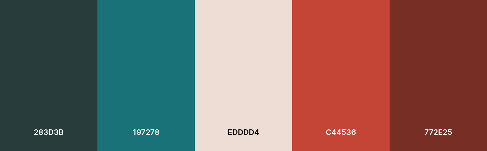

Palette de couleurs : coolors.co

Police pour le corps : Roboto
Police pour les titres : Dancing Script
Boutons légèrement arrondis, pas de carrés nets
Explication du parti pris de ne changer que les dates
Débat sur ce qu'on y met pour classer dans la page Tous les Pèlerinages